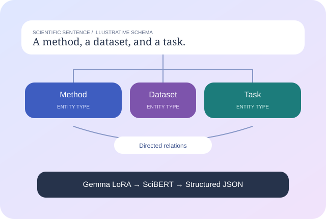

01 / Scientific information extraction
Teaching language models to return structure.
Can task decomposition make scientific entity and relation extraction more reliable?
Compared prompting and LoRA adaptation of Qwen, Llama, and Gemma on SciER, then paired Gemma entity generation with a typed-pair SciBERT relation classifier. The work investigates exact spans, directed relations, JSON reliability, and out-of-domain behavior.
Saved results and the test-selected relation threshold are explained in the case study.

Inside the extraction experiment
Read a scientific sentence and keep its exact wording available.
Conceptual walkthrough of the experiment. No live inference or model download.